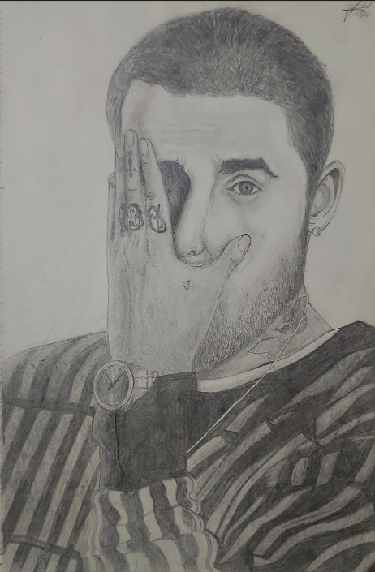

Mac Miller
“Mac Miller” created on March 8, 2020, is a pencil-only. This lifelike drawing beautifully captures Mac Miller’s introspective and expressive presence with meticulous attention to detail. Inspired by my deep admiration for his music and the emotions it evokes, the precise strokes bring out the intricate features and textures of his face, especially highlighting his hand gently resting on his face. This piece taught me the importance of drawing from reference, emphasizing the need to focus on minute details. The precision and depth achieved with just a pencil demonstrate my commitment to detail.